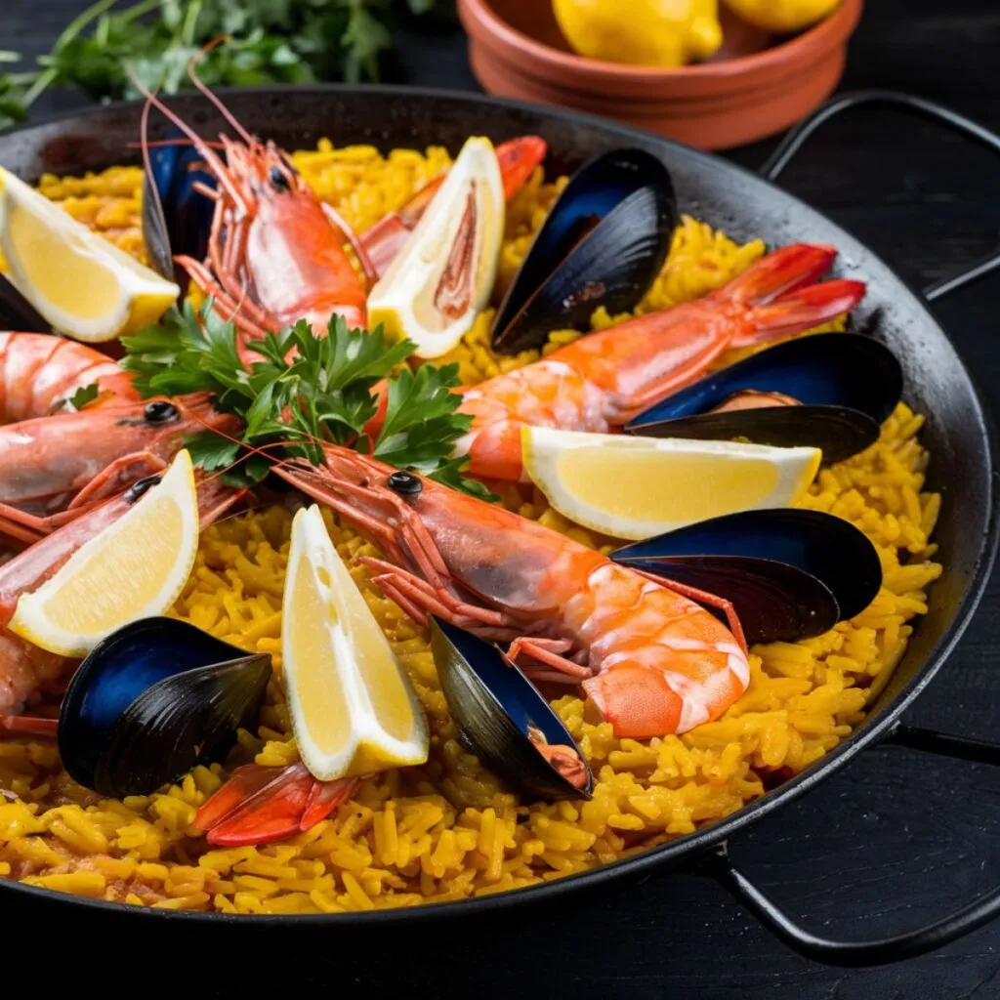
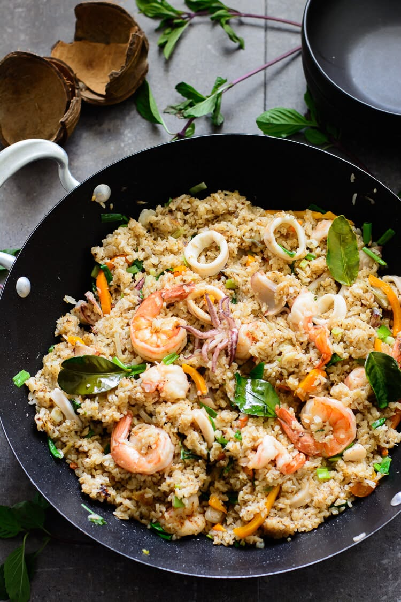
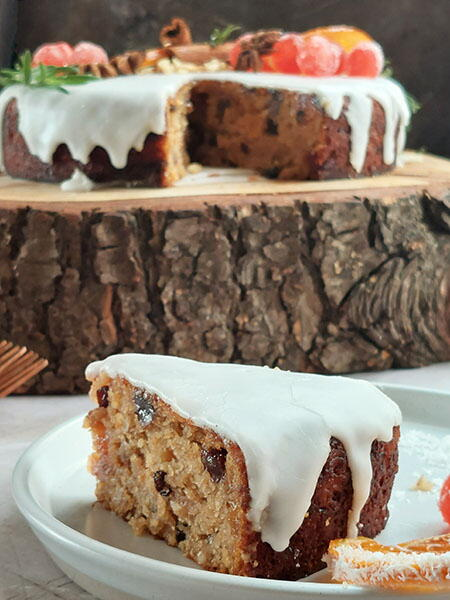

Mains

Gourmet Meat Stew 450 Rupees
The dish's meat simmers for hours; one bite makes it melt on your tongue. It'll keep your full for awhile. A true bucket-list meal!

Seafoodpaella 450 Rupees
Seafood Paella is made with our sliced and carefully assembled toppings of Mighty Porgy, Hylian Rice, Goat Butter, and rock salt. This celebratory meal is considered top-sehlf and is common in birthday parties for fishermen. Eating this can make you tougher and give your day an extra boost!

Seafood Curry 450 Rupees
Made with love, this food can leave you feeling as if home is in a dish! This meal can heal you from all your troubles, made with home-caught seafood. Spices imported from Goron city make this dish explode with flavor! The intensity of the Goron Spice makes this meal unsuitable for children. Please purchase with caution.
Deserts

Pumpkin Pie 450 Rupees
The intense sweetness of the pumpkin pie makes this dish popular among children.

Wildberry Crepe 450 Rupees
Looking for something light and filled with fresh ingredients? Come try the new Wildberry crepe, new to our menu! Wild berries are known for their natural sweetness and a thin yet springy dough.

Fruit Cake 450 Rupees
Got room for one more? Fruitcake is on the menu. Originally a delicacy only enjoyed by the princess of Hyrule, the recipe was shared all across Hyrule to be enjoyed. This food is commonly used in celebrations, but can be made for everyone to enjoy on their own!